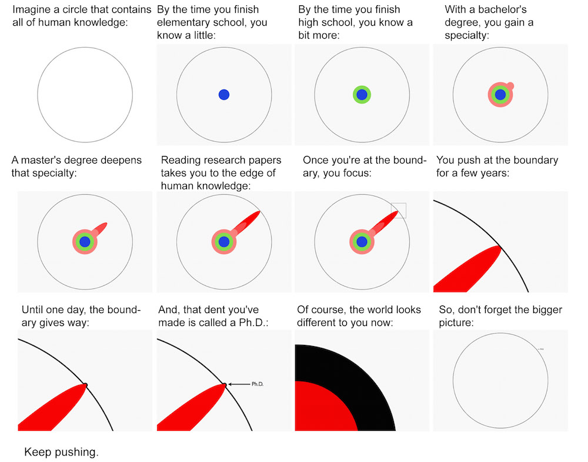

February 13 2021
Advice? No, thanks!
Most of us hate advice, don't we? I wonder why. The one thing that comes to the top of my mind is, we don't like to be told what is to be done. Is that it? Is that the only reason? I realized there is something else that bugs me. This is more about the person that is dishing me out the advice, that was unwarranted in the first place. More often than not, I wander off thinking what is it that made this person believe he is special and worthy of dishing out advice.
At the risk of sounding arrogant, I must confess I don't like listening to advice from people that haven't done anything special. Of course, there are exceptions. I listen to people that are very close to me because I know for sure that they have my best interest in their minds. But an average Joe telling me what to do, and how and where I can improve - I have little tolerance to this. Of course I understand that this intolerance is justified only when the advice is unsolicited. If I go and ask someone their opinion and I hear something that I don't like, I cannot argue. Come on, I asked for it.
This aversion to conceitedness disguised as compassion probably started when I was in primary school. There was this guy who was one year senior to my brother. I remember my brother was in fifth standard (I am not going to say fifth grade like an American. For me, it is fifth *standard*) and this guy was in sixth. So one day he comes up to my brother and says "Fifth standard is easy and all. You will be in sixth standard next year and you will see it is quite tough." Not knowing much about this guy, my brother thought what he said is possibly true. So next year, my brother was in sixth and our guy was in seventh. He comes up to my brother again and says "You know what, sixth standard is nothing. Come to seventh and you will know what struggle is." This time my brother took it with a pinch of salt and mostly ignored all that he said. Next year, my brother goes to seventh and guess who comes again to scare him. Surprise, surprise, it is our average Joe.
And why do I call him an average Joe? See, being in sixth or seventh standard is quite ordinary. There is nothing special about that , right? Now as I grew up, I find there are many of these average Joes who think they are doing something special while all they are doing is just being average. One of the professors in my department who worked in various companies keeps talking about how difficult it is working in the industry. He keeps saying things such as "You should have excellent knowledge in this subject to get recruited", "You should have excellent communication skills and presentation skills to survive in the workplace" and this and that. And the list of skills that he thinks we should have before going for work is endless. Seriously? Is working in a company that difficult? India has a population of 1.3 billion. Majority of the households will have atleast one person working in a company. So you get the scale, right? Now do you think all of them have all these skills that you mentioned. Of course not. While the professor thinks he is trying to motivate the students by saying such things, all he achieved is lie in front of them and make them feel insecure. I can see parallels between this professor and the average Joe my brother encountered in school. There is a very simple mantra that I live by. If there are many people doing something, that means doing that something is not difficult. Doing that something does not need enormous amount of talent or skill. And finally, doing that something does not make you "special".
This mantra can be applied to many other things as well. When we learn driving, most of us encounter this one guy who comes up and says "Oh you are learning to drive now? You need to have good reflexes, hand-eye coordination and great concentration." Again seriously brother? You think the drivers of the thousands of cars out there have excellent "hand-eye coordination"? Again , what might sound like advice is actually intimidation by a conceited bugger who thinks driving a car is a special skill.
My brother once said "the easiest thing to do to be comfortable in life is study and get a job. If you have done this, that itself means you have chosen the easiest of options and are far from anything special. Because anyone can do that." I was mighty impressed by these words. I'll try to bring some perspective here:
- I finished high school, can I think I am special? - No. There are millions who have done that. That's easy to agree, right?
- I have an Engineering degree. Hey, Engineering is tough and that must mean I have done something special, right? - Huh, you cannot be more wrong. The rate at which this country is churning out engineers, soon you are likely to be looked down upon for choosing Engineering. Special? Pfft!
- I did an MBA. So all white collar and all. Isn't that an achievement? No, no and no. Nearly 200,000 students in the US are awarded MBA degrees every year since 2010. Imagine the plight in India.
- I have a PhD. That takes years of patience, persistence and dedication. For the love of God, now can I think I have done something worthy enough to gloat? - I wish I could say Yes. I'll just put this picture here to speak a thousand words.  Further, in India alone, nearly 30,000 students are awarded PhDs every year. So when you calculate the number of PhDs this country has, do you think you can count yourself as someone special? You decide.
I know I have gone on a rant here. I don't know what tipped me off. Yeah, but my point is, before you look down and see so many people who haven't achieved what you have, look up and see all those people who have achieved far better things. That should make your ego null and void. And yeah, about the advice, everyone to whom you are dishing out advice is better than you at something. Would you like it if he starts giving you unsolicited advice about that? Something to ponder about.
Wait, am I doing those things that I asked you not to? Unsolicited advice? Umm ,probably not. I am not pointing fingers at anyone here. And blog posts are allowed, aren' they?